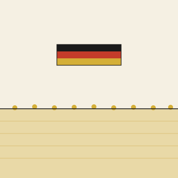

Het Open Vizier · Editie Duitsland
Een krant over denken zonder oogkleppen

★ Editie Duitsland
Duitsland draagt de structurele last van de Europese agrarische transitie — van het koolzaadveld tussen Berlijn en de Oostzee tot het GAP-Strategisch Plan dat oostduitse boeren onder druk zet. Deze editie zoekt concrete, haalbare antwoorden die Duitse boeren sterker maken in plaats van zwakker.
★ I · De oplossing
De Carbon-Alert-architectuur op het ostdeutsche koolzaadareaal. Eén sturend artikel dat de multiplicator-logica blootlegt — agronomie, subsidie-effectiviteit, en boeren-onafhankelijkheid van Brussel.
★ II · Het instrument
Een Duitstalige uitwerking van het analytische instrument waarmee elke beleidsmaatregel langs zijn gevolgen kan worden gelegd. Vier varianten — Brusselse, Singaporese, Zwitserse — laten zien hoe dezelfde methode tot zeer verschillende beleidsuitspraken leidt.
Konsequenzkarte · DE
Het instrument in zijn Duitstalige vorm. Hoe een Konsequenzkarte wordt opgebouwd, welke logische lagen ze bevat, en waarom Duitsland — gegeven zijn federale structuur — uitzonderlijk goed past op dit analytische raamwerk.
Lees de Konsequenzkarte →Gevolgenkaart · Brussel
De Europese variant — wat een gevolgenkaart is, hoe ze gelezen wordt, en waarom Europa er een nodig heeft. De referentievorm waarvan de Duitse en andere nationale varianten zijn afgeleid.
Lees het manifest →Gevolgenkaart · CH
Een directe buur, een ander beleid, een andere uitkomst. Hoe Zwitserland — buiten de EU maar binnen het Europese economische weefsel — zijn agrarische en stikstof-keuzes anders heeft gemaakt, en wat dat voor Duitsland betekent.
Lees de Zwitserse versie →Gevolgenkaart · Singapore
Geen Europees land, maar wel een spiegel — Singapore importeert vrijwel al zijn voedsel en heeft het oplossingsvraagstuk omgekeerd benaderd. Wat een land doet als het de luxe van eigen grond niet heeft, en wat een land daarvan kan leren dat die luxe wel heeft.
Lees de Singaporese versie →★ III · De spiegels
Drie afleveringen uit Editie 6 die het Duitse vraagstuk in een Europese context plaatsen. De Zwitserse spiegel, de Canadese spiegel, en de Europese tegenmacht die uit Zwitserland kwam.
Editie 6 · Aflevering 6
Zwitserland heeft een unieke positie — democratisch, federaal, niet-EU, maar economisch volledig verweven. Hoe Zwitserland over het Europese model denkt, en wat Duitsland daarvan kan opdoen.
Lees aflevering 6 →Editie 6 · Aflevering 7
Een andere federatie met een vergelijkbaar landschap maar fundamenteel andere politiek-juridische structuur. Wat Canada laat zien over wat in een federale democratie wél en niet werkt.
Lees aflevering 7 →Editie 6 · Aflevering 10
Hoe een Zwitsers initiatief — Union of European Industrialists — een Europese tegenmacht heeft opgebouwd die in Duitsland nog niet bestaat. Wat de Duitse industrie daarvan kan leren.
Lees aflevering 10 →→ Lees ook in Editie Europa
Het Europese zusterverhaal van dit Duitse verhaal — wat de Carbon-Alert-architectuur op de schaal van het volledige Europese koolzaadareaal van zes miljoen hectare oplevert. Voor minder dan een half procent van het GLB-budget krijgt Brussel een kwart tot een derde van de Europese landbouwklimaat-emissie opgelost, volledige eiwit-soevereiniteit en EUDR-conformiteit.
Drie ontevreden lobbygroepen — boer, ngo, zuivelketen — worden drie tevreden coalitiepartners. Dat is het politieke geschenk dat niemand nog op tafel heeft gelegd.
Voor de Bundesländer: deze editie biedt geen lobby, maar een werkbaar voorstel. Pilot-omvang 500 hectare per Bundesland, doorlooptijd drie jaar, kosten van een kleine startsubsidie — dat is genoeg voor de praktijkschaal-validatie.
Voor ostdeutsche koolzaadboeren: hier is een vierde optie naast doorgaan, akkerbouw-omschakeling of staken. Een cash-gewas dat het bedrijf erft, met factor vier tot acht hoger inkomen op dezelfde grond.
Voor het BMEL en het GAP-departement: deze architectuur vult de bestaande GAP-Strategieplan-instrumenten concreet uit. ÖR 2, ÖR 6, GLÖZ 7 — allemaal van toepassing zonder nieuwe regelgeving.